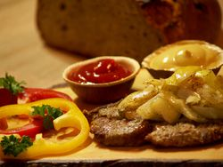

Wir bedanken uns bei unseren Kunden für das vergangene Jahr und wünschen Ihnen und Ihrer Familie ein frohes und besinnliches Weihnachtsfest!
Es würde uns freuen, Sie auch im kommenden Jahr mit unseren original thüringischen Produkten versorgen zu dürfen.
Herzlich Willkommen im
Bei uns genießen Sie
Original Thüringer Rostbratwürste aus dem Saale-Holzland-Kreis bei Jena-Schorba
und andere thüringische Spezialitäten
Sofort genießen

Im Thüringen Grill bringen wir ein Stück thüringisches Lebensgefühl in die sächsische Landeshauptstadt!
Bei uns genießen Sie immer frische Bratwürste aus Bucha und Limonaden aus dem Eichsfeld. Auch selbstgemachte Rostbrätl und Bouletten landen bei uns auf dem Grill. Dazu reichen wir auf Wunsch gebratene Zwiebeln oder unseren leckeren, selbstgemachten Kartoffel- oder Krautsalat!
Unsere frisch zubereiteten Speisen genießen Sie wahlweise bei uns vor Ort am Ullersdorfer Platz in Dresden-Bühlau oder gut verpackt zum Mitnehmen.
Genuss mit nach Hause nehmen

Gern erhalten Sie bei uns auch frische Rostbratwürste zum Selbergrillen und andere original thüringische Spezialitäten zum Zu-Hause-Genießen!
Wir bieten Ihnen jederzeit unter anderem thüringische Knacker, Knackwurst-Ringe und Salami sowie Wurst im Glas, darunter Leberwurst, Blutwurst und Sülze. Auf Bestellung versorgen wir Ihnen zudem Kutteln und thüringische Wurst in Blasen und Ringen.
Als eine weitere Besonderheit erhalten Sie bei uns eine Auswahl verschiedener Sorten original thüringischer Limonaden aus dem Eichsfeld.